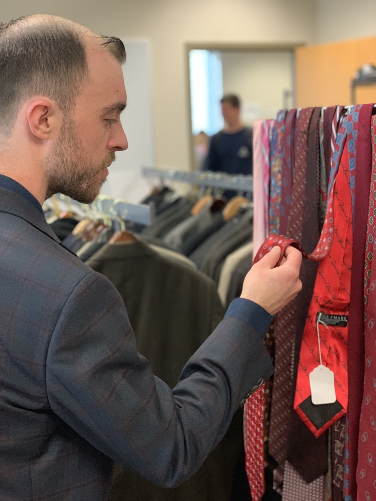

Barsema's Closet is a non-profit organization that operates under Northern Illinois University. We provide NIU students with affordable business clothing that they need in order to help advance their professional development. Located in Barsema Hall, the store provides easy access to the clothing that they can pick up on a weekly basis.
Barsema's Closet operates on a donation-based business plan. Donations include clothing, supplies, monetary, or time donations.
We exist based in our mission:
To support students by providing them with affordable and easily accessible business clothing that they need to succeed through their professional development.